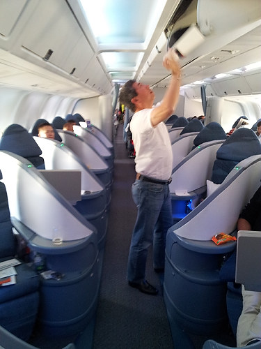

|

One disadvantage of this type of chair arrangement - no one really sat next to anyone else. You could only talk to a travel companion by hanging over the back of the chair or stepping into the aisle. You can see that each cubicle is like a small coffin shutting out the rest of the world. |